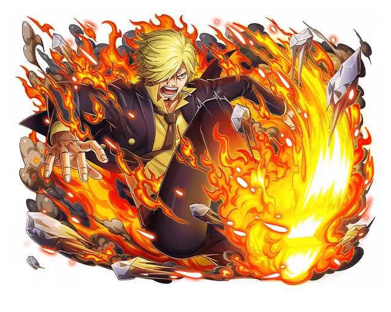
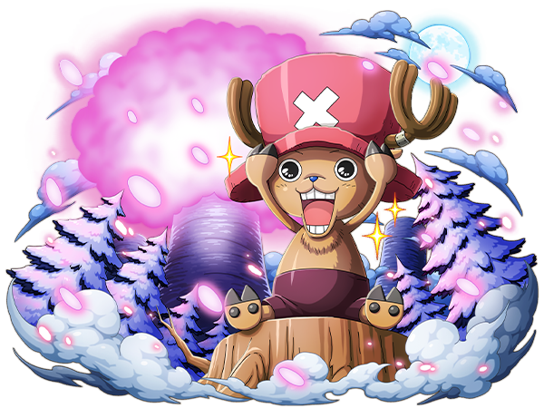

One Piece
Présentation de l'oeuvre
L'histoire suit principalement l'équipage du Chapeau de paille, mené par son capitaine Monkey D. Luffy, un jeune homme
ayant mangé, enfant, sans le savoir le fruit du Gum Gum (Gomu Gomu no Mi) qui lui permet d'étirer ses membres, et dont le rêve est de devenir
le Roi des pirates.
Ils vont parcourir les différentes îles qui compose le monde dans le but de trouver le One Piece que l'ancien Roi des pirate Gold D. Roger à cacher quel que part dans ce monde
Présentation de l'équipage
Luffy

Il est le Capitaine de l'équipage du Chapeau de paille
Vous voulez empêcher tout le monde de mourir ? C'est naïf. C'est la guerre. Les gens meurent.
Zoro

Epéiste de l'équipage et bras droit du capitaine, Zoro a décidé de rejoindre l'équipage dans le but de devenir le meilleur épéeiste du monde
Tu essaies de me tuer, mais n'arrives même pas à tuer mon ennui !
Usopp

Bricoleur de l'équipage, Il est le peureux de service(mais on l'aime bien)
J'ai beaucoup changé. Avant, pour avoir l'air plus fort, j'inventais des mensonges. Maintenant, je n'ai plus besoin de mentir.
Sanji
Cuisinier de l'équipage, Sanji est connue a travers Grand Line tant pour ses talents de cuisinier que pour ses aptitudes au combat
La cuisine est un don de dieu, les épices un don du diable… je crois que c'était un peu trop épicé pour toi
Nami

Navigatrice de l'équipage, sans elle l'équipage n'aurai pas fait long feu dans les intrépides eau de Grand Line
Je suis peut-être une voleuse, mais ça ne m'empêche pas d'avoir une conscience !
Chopper
Médecin de l'équipage, il est vue comme l'animal de compagnie de l'équipage a si méprendre car se cache en lui une force suffisante pour calmer de nombreux esprit arrogant
Si pour que tu atteignes ton but je dois devenir un monstre alors je serai un monstre.
Robin

Archéologiste de l'équipage, elle sait lire les écritures inscrite sur les ponéglyphes et souhaite résoudre le puzzle qu'il représente
L'histoire se répète sans cesse, mais les hommes ne peuvent pas revenir sur le passé
Francky

Charpentier de l'équipage, c'est lui qui a imaginer et fabriquer l'actuel bateau de l'équipage : le Thousand Sunny GO
Vivre n'est pas un crime
Brook

Musicien de l'équipage, Il a mangé le fruit de la Résurrection (Yomi Yomi no Mi) qui lui a permis de ressuscité mais son âme ayant pris trop de temps a rejoindre son corps il a repris vie dans un corps squelettique
La mort n'est pas une excuse. Un homme n'a qu'une parole.
Jimbei

Dernière recrue de l'équipage mais pas des moindre, Il est un guerrier hors-pair et se fait surnommé le Cavalier des Mers
Oublie ce que tu as perdu et pense à ce qui te reste